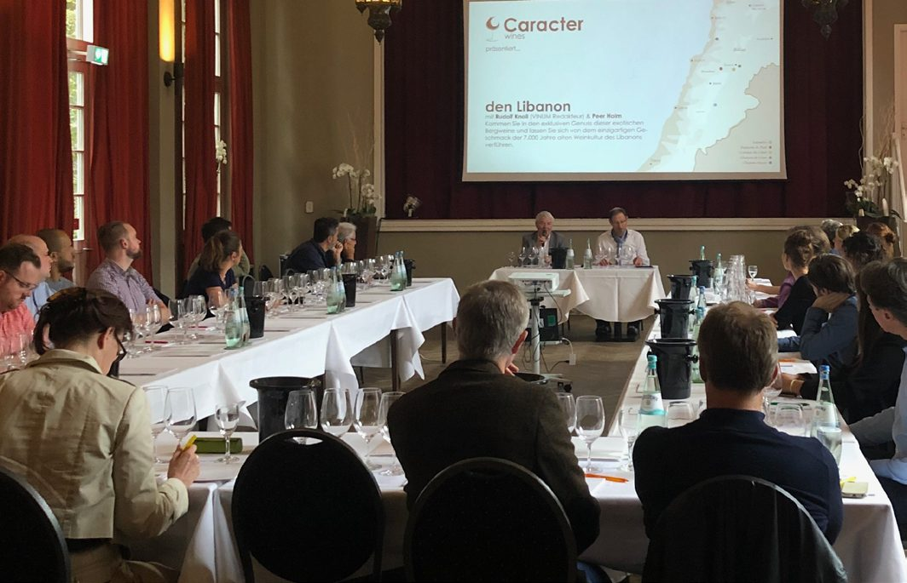
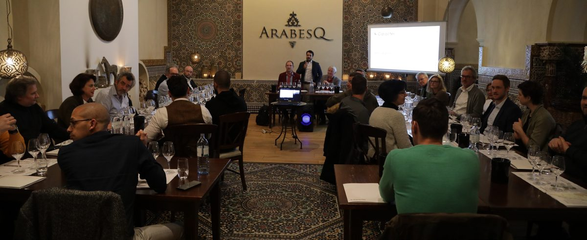
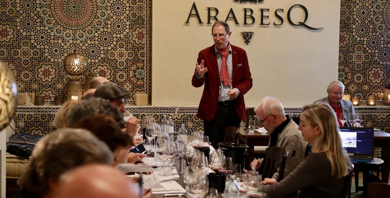
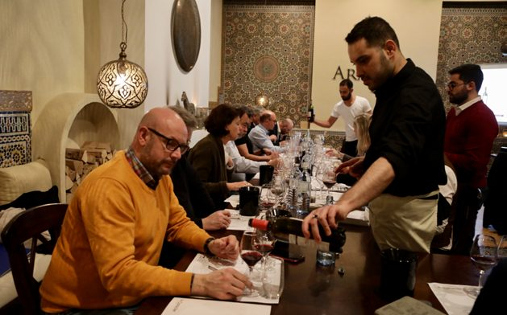
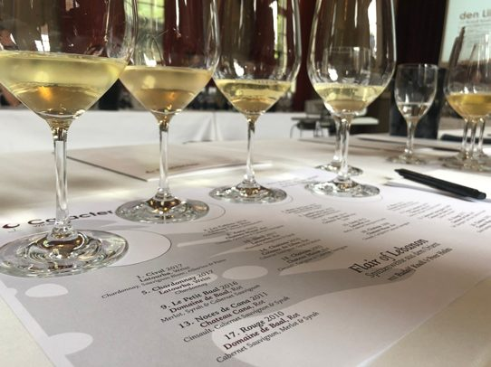
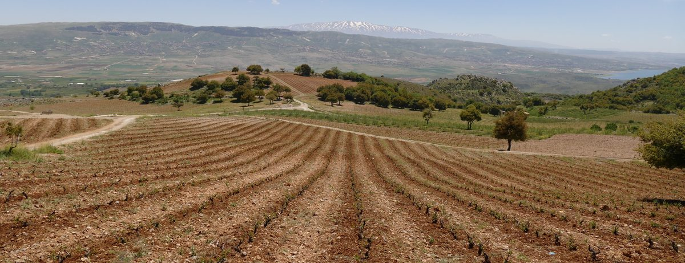
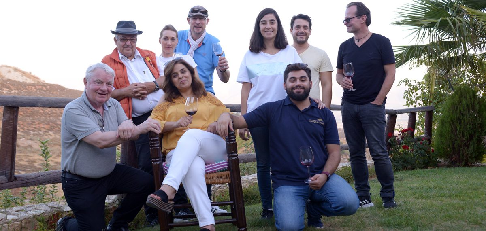

Bottle Lobby Wine Shows
A Wine Show is an intimate, regionally targeted B2B tasting — one room, one afternoon, 25 to 35 pre-qualified buyers already active in that market. No trade-fair floor, no anonymous booth, no cold leads. Wineries present directly to the people who can actually place an order — and buyers taste a curated portfolio they'd otherwise never find.
The Format
Every Bottle Lobby Wine Show follows the same six-step structure — refined across real events long before it became a platform feature. Nothing here is theoretical.
Submit your wines and your story through Bottle Lobby. We review portfolio fit, pricing, and story potential before a city is chosen.
Using our network of sommeliers, distributors, and gastronomes, we hand-select 25–35 buyers already active in that regional market. No open registration, no tire-kickers.
A recognised wine journalist or sommelier presents your region's history and your winery's story, in a venue that fits the wine's character.
Guests taste every wine in sequence, guided in real time — typically 20 to 25 labels across all participating wineries in one sitting.
The evening closes with a curated dinner menu, paired to the exact wines just tasted — turning a tasting into a memorable, networked evening.
Every participating winery receives a full attendee report and direct introductions through Bottle Lobby. Interested buyers move straight to ordering.
Case Study
The Wine Show format wasn't designed on a whiteboard. It's the direct evolution of Flair of Lebanon — a series of professional wine shows our founding team organised in 2019 and 2020, introducing Lebanese wines to Germany's wine trade one city at a time, in partnership with the Sommelier Union Deutschland.
The first Wine Show. Presented by Rudolf Knoll (then Chief Editor, VINUM) and Peer Holm (President, Sommelier Union Deutschland). Buyers included Rindchen Weinkontor, Weinland, Kinfelts, Enoteca, and independent sommeliers and restaurateurs from across the city.
The format, repeated and expanded — one more winery, three more wines. Buyers included Metro, Handelsblatt, Weinhandel Kraas, Messe Düsseldorf, and sommeliers and gastronomes from the region.





Full event recaps: Flair of Lebanon — Hamburg · Flair of Lebanon — Düsseldorf
What's Coming
Every show below is live on the platform right now. A show appears here as soon as its host has fixed the date, the city and the theme — that is the stage at which it is looking for the producers who will pour, so early listings show those three things and nothing more. Venue, exhibitors and wines are what Bottle Lobby checks before a show is released, and names appear only from that moment. That restraint is deliberate: it lets a show build interest without committing anyone who has not yet said yes.
See It In Action
A short look inside the format — the room, the presentation, and the tasting that convinced 62 wine professionals to reconsider a country they'd mostly overlooked.
Where It Starts
Before a single bottle reaches the tasting table, someone has to go and see where it comes from. Our 2018 trip through Lebanon's Bekaa Valley — meeting winemakers on their own ground, walking the same limestone slopes they farm — became the story that filled two rooms with buyers a year later. It's the same principle behind every Wine Show since: the presentation is never just tasting notes. It's a place, a people, and a reason to care.


That trip also earned independent press coverage — the same kind of third-party credibility every Bottle Lobby Wine Show is designed to build for the wineries that present.
Built for Both Sides of the Table
A Wine Show only works if it's worth both sides' time. Here's what each side actually gets out of the room.
Skip the €20,000+ booth. Costs are shared across all participating wineries and Bottle Lobby.
Present to 25–35 buyers already looking for what you make — not passers-by collecting brochures.
A recognised sommelier or wine journalist presents your history and terroir, so you don't have to sell yourself.
Gauge buyer reaction to specific wines before committing to volume, new labels, or packaging.
Wine Shows have generated coverage in VINUM and other trade press before — and can again.
Every winery in the room has already been reviewed for quality, pricing, and market fit.
No inbox full of samples, no wasted meetings — one afternoon, one decision-ready shortlist.
Talk to the people who actually make the wine — not a fourth-tier reseller reciting a spec sheet.
Exclusive regions and labels not yet available through standard channels.
Wines are served the way they're meant to be enjoyed — paired with food, in conversation.
Behind the Scenes
Each Wine Show follows a tested operational checklist, so wineries and venue partners always know exactly what to expect.
Investment
Bottle Lobby coordinates the venue, the invitation network, the presentation talent, and the hospitality. Costs are split transparently among all participating wineries — with Bottle Lobby contributing a share as well — scaled to the city, venue, and guest count.
It's a fraction of a single trade-fair booth, split between everyone in the room, for a result no anonymous fair floor can match: a curated, story-led introduction to buyers who were already looking for what you make.
Figures from the 2020 Düsseldorf pilot, shown for illustration. Your actual cost depends on city, venue, and guest count — apply to get a quote for your region.
Wine Shows
Whether you're a winery with a story worth telling, or a buyer who wants first access to what's next — the next Wine Show starts with an application.